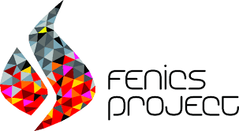
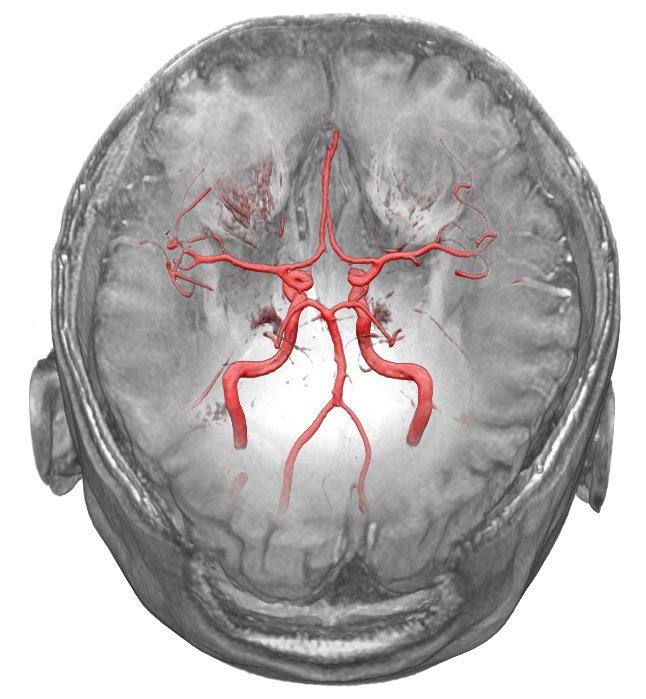
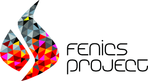
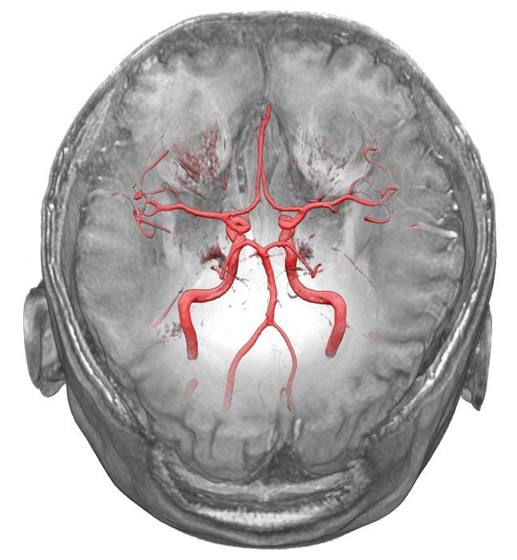

Kent-Andre Mardal, Professor in Mechanics, Department of Mathematics,
University of Oslo
and
Adjunct Research Scientist,
Simula Research Laboratory
E-mail:
kent-and@math.uio.no,
kent-and@simula.no
2021
2020
- Feb. 3-24: Monash Workshop on Numerical Differential Equations
and Applications 2020, Melbourne, Australia.
- April 1-June 30: Research visit at Penn State, Ludmil Zikatanov (Canceled due to Covid-19)
- May 25-27: The Glymphatic System: From Theoretical Models to Clinical applications, Copenhagen (Canceled due to Covid-19)
- July 19-24: WCCM-ECCOMAS 2020, Paris (Canceled due to Covid-19).
- August 23-28: ICTAM 2020, Milan (Canceled due to Covid-19).
- Sept1-Nov 30: Research visit at MOX, Paolo Zunino (Canceled due to Covid-19).
2019
2018
- Nov 20-22: Visit Andy Wathen
- Sept 17-18: GEMRIC workshop, Bergen.
- July 8-12: I will present our work at World congress of biomechanics, Dublin.
- June 20-22: Invited talk at Mathematical models in health sciences, Nantes.
- June 10-15: I organize a MS with Marie Rognes at ECCM6/ECFD7, Glaskow.
- June 10-15: Summerschool, Nordic graduate course Computational Mathematical Modeling
in beautiful Norfjordeid .
- May 4-8: I will present our work operator preconditioning of PDE constrained problems at SIAM ALA , Hong Kong.
- April 16-19: invited keynote at INdAM, Rome.
- Jan 9-11: Workshop on solvers for materials with high-aspect-ratio inclusions, Finse
2017
- Des 4-5: 2nd Workshop on computational aspects of perfusion and flow in live tissue, Fantoft, Bergen
- Des 1: Opponent for Marcela Szopos habilitation Mathematical modeling, analysis and simulations for fluid mechanics and their relevance to in silico medicine
- Nov 28:Opponent on the defence of "Flow of biological fluids in patient specific geometries” by Helena Svihlova
- Oct 25: I will present our work in CBC at CSECONF2017 (Oct 23-25, Simula) -- in memory of Hans Petter Langtangen.
- Sept 29-30: Organize workshop Bio-mechanics of living systems from cells to organisms, Oslo
- Sept 27: Invited keynote at Enumath 2017, Voss.
- Aug 14-20: The second week of the nordic graduate course Computational Mathematical Modeling
in beautiful Norfjordeid . Schedule and background material is here .
- June 20: Invited plenary at the
4th Cerebrospinal Fluid Dynamics Symposium, Atlanta.
- May 25: Invited keynote at HPCSE 2017, Ostrava.
- May 9: Invited plenary Interpore 2017, Rotterdam
- April 11: I will present our work on turbulence detection in cerebral aneurysms at CMBE 2017.
- Feb 26: Invited plenary at ASSR 2017, San Diego.